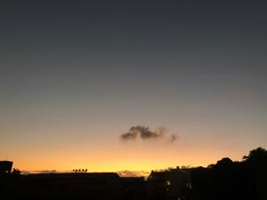
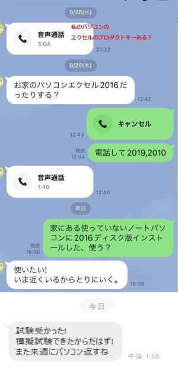

うるがいの話 ある日
最新: Officeストアアプリ版【うるがいの話 ある日】とは 一日だけのプログです
『うるがいの話』の最新一日だけのプログで、通信料が少なく経済的だ。カニの画像をクリックすると全ての日付が載る『うるがいの話』サイトを表示します
|
|
【うるがいの話】 うるがい(ｳﾙｶﾞｲ urugai)とは、『もずくがに』の名前でとても大きくなります。 |
|---|---|
|
|
【カミマヤーの話】 猫のことを方言でマヤーといいます。カミマヤー（kamimayaa）とは、神の猫のことです。 |
|
【たながぁの音楽】 たながぁ（ﾀﾅｶﾞｰ tanagaa）とは手長えびのことで、何種類かあり大きいのは車 エビぐらいになります。 |

|
【ぶながぁの話】 ぶながぁ(ﾌﾞﾅｶﾞｰ bunagaa)とは、赤い髪の毛、赤い身体、そして身長は１ｍ２０ｃｍ ぐらい、川の蟹を食べているの目撃された。場所は沖縄県国頭郡大宜味村のと ある村僕の隣近所に住んでいる爺さんから、聞いた話です。 |
|
|
【ギーマの話】 ギーマ(giima)とは、山原の里山に咲くスズランに似た、 花を付けます。実は食べられます、 気が付くと口の周りが紫になっています。 |
2022年10月01日 (土）Officeストアアプリ版
16:26

子供から、子供のパソコン（４年前に購入、この前メイン基板が壊れ、新品に
入れ替えたばかり）に入っているエクセルのプロダクトキーって、家にある？
。『お、ないと思うよ』と答えたあととりあえず、家の中をゴソゴソ探すがや
はり無い。就活活動のためＭＯＳ（Ｍｉｃｒｏｓｏｆｔ Ｏｆｆｉｃｅ Ｓｐ
ｅｃｉａｌｉｓｔ）の対策テキストに、模擬試験プログラムがあるが、子供の
パソコンのストアアプリ版では正常に動かない、「デスクトップ版」に入れな
おすと、解決するらしいが入れ替えためには、プロダクトキーが必要とのこと
、初めて知った。その後、子供はマイクロソフトに電話して、何とか出来ない
かと交渉したもののダメだった。買えばと話したが、さすがに値段が高くてと
諦めると言った。それでも、諦めきれないのか、家にあるパソコンの中にＯｆ
ｆｉｃｅ２０１６がないかと聞いてきた。ふむふむ、暇人はヤフーオークショ
ンで４００円、ソフトを落札、遊んでいたノートパソコン（キーボードが壊れ
ているため、外付けのキーボードを繋げ利用する）にインストール。子供に伝
えると直ぐに取りに来た。

子供から、試験に合格したと連絡を受けた。その筋の私、役に立ったかも。
１６時１８分 ビットコインの総資産 ￥８、０９５↓